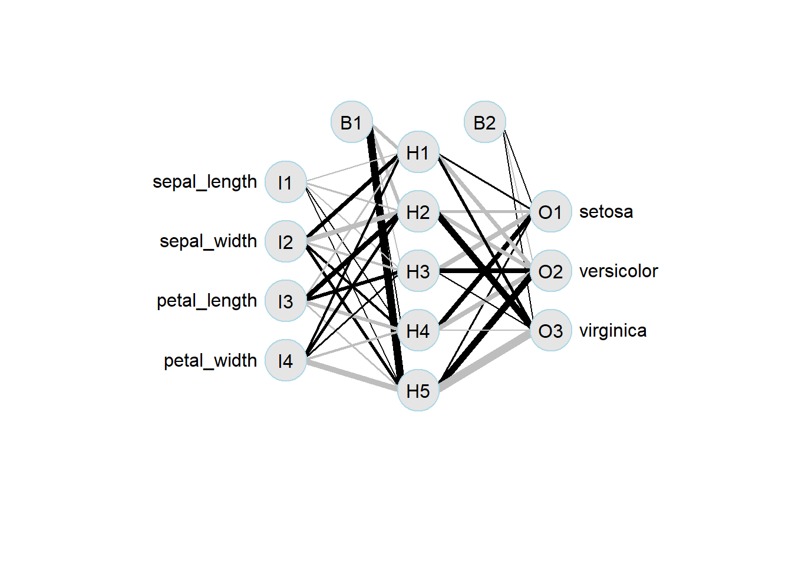

A técnica é muito utilizada na solução de problemas de classificação onde o resultado(desfecho) é uma classe (e.g. gato, cachorro, cavalo).
Neste exemplo, nós usaremos como exemplo uma linha de produção com sensores que registram características como largura e comprimento da pétala e sepala dos três tipos de flores iris: setosa, versicolor e virgínica.
Nosso objetivo é fazer um modelo de previsão o qual com base nessas características, consiga classificar cada tipo de flor e separá-las corretamente.
De onde vem a demanda
Vem do uso de sistemas que utilizam visão computacional, processamento de linguagem natural em seu funcionamento como por exemplo veículos semi-autonomos, linhas de produção de veículos, controle de qualidade de autopeças entre outros.
A primeira rede neural artificial foi implementada em 1958 por Frank Rosenblat e se chamava Perceptron e naquela época já se falava que era um embrião de um computador eletronico que seria capaz de andar, falar, ver, escrever e se reproduzir. Materia New York Times
# packages ----------------------------------------------------library(tidyverse)library(tidymodels)library(nnet)library(NeuralNetTools)# data --------------------------------------------------------data_iris <- iris %>% janitor::clean_names()split_iris <-initial_split(data_iris, strata = species)train_iris <-training(split_iris)test_iris <-testing(split_iris)# model -------------------------------------------------------mdl_fit_nn_iris <-nnet(species ~., data = train_iris, size =5, decay =0.01, maxit =500)
# weights: 43
initial value 137.813369
iter 10 value 40.287271
iter 20 value 10.098038
iter 30 value 9.419960
iter 40 value 9.054851
iter 50 value 8.772584
iter 60 value 8.746655
iter 70 value 8.734800
iter 80 value 8.731859
iter 90 value 8.731220
iter 100 value 8.730121
iter 110 value 8.729871
iter 120 value 8.729699
iter 130 value 8.729660
iter 140 value 8.729656
iter 140 value 8.729656
iter 140 value 8.729656
final value 8.729656
converged
Vamos fazer uma previsão usando o modelo que construímos e colocar o resultado dentro do dataframe com os dados de teste para podermos comparar valores previstos e realizados.
Como já temos o resultados previstos e o real, podemos fazer uma matriz de confusão para facilitar a visualização dos resultados e analisar o desempenho inicial do modelo.
#confusion matrixtable(test_iris$species,predict(mdl_fit_nn_iris,newdata = test_iris, type ="class"))
#plotando o gráficoNeuralNetTools::plotnet(mdl_fit_nn_iris,pad_x=0.55, circle_col ="grey90")

Pra onde vai quem é o cliente
Um modelos de previsão de classificação pode ser embarcado dentro do sistema de produção.
O modelo que fizemos é bastante simples e serve apenas como base para aprendizado, como próximo passo o uso de validação cruzada (cross validation) pode ser uma excelente opção para complementar o que aprendemos aqui.
Qual o resultado
Aperfeiçoar as técnicas de contrução de modelos e solução de problemas de classificação para que estes possam auxiliar na produtividade da industria de flores que usamos como exemplo.
Facilitar o processo de classificação.
Melhorar o processo de produção, qualidade do produto, satisfação do consumidor e competitividade do negócio.